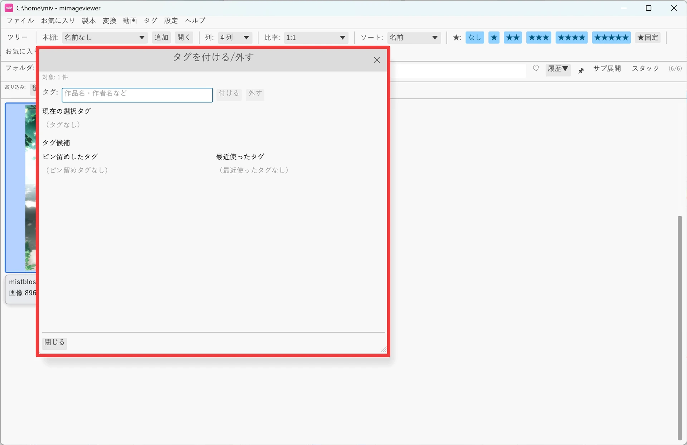
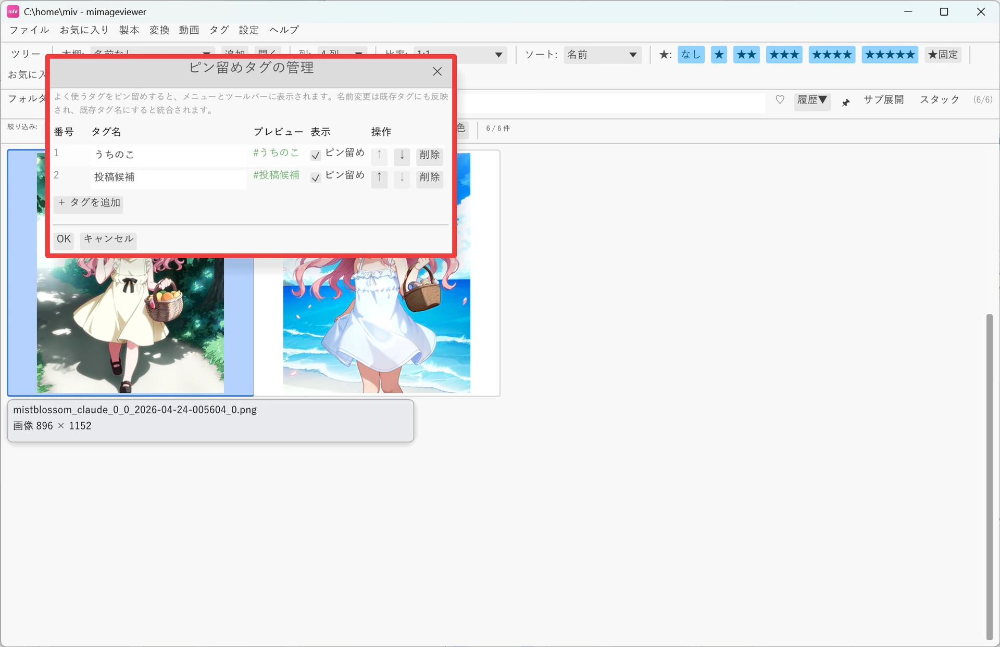
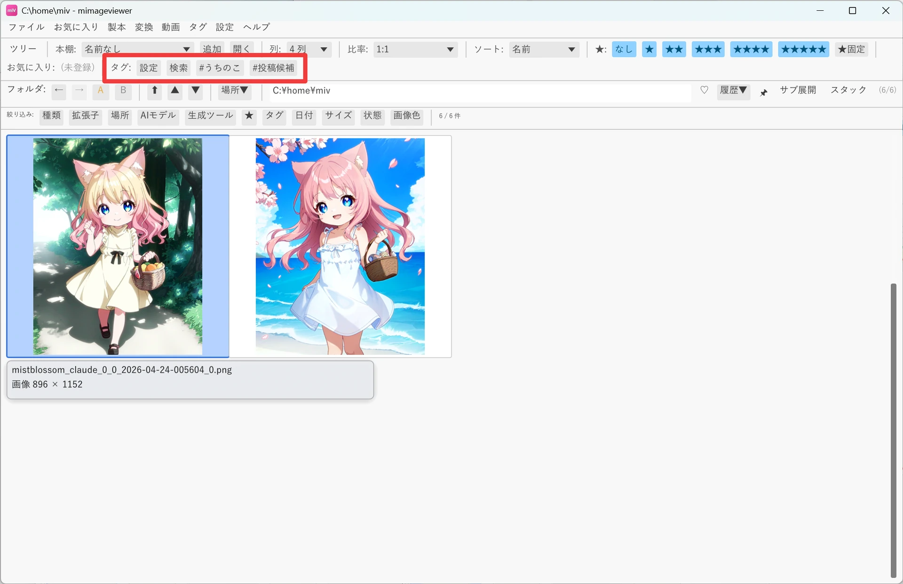
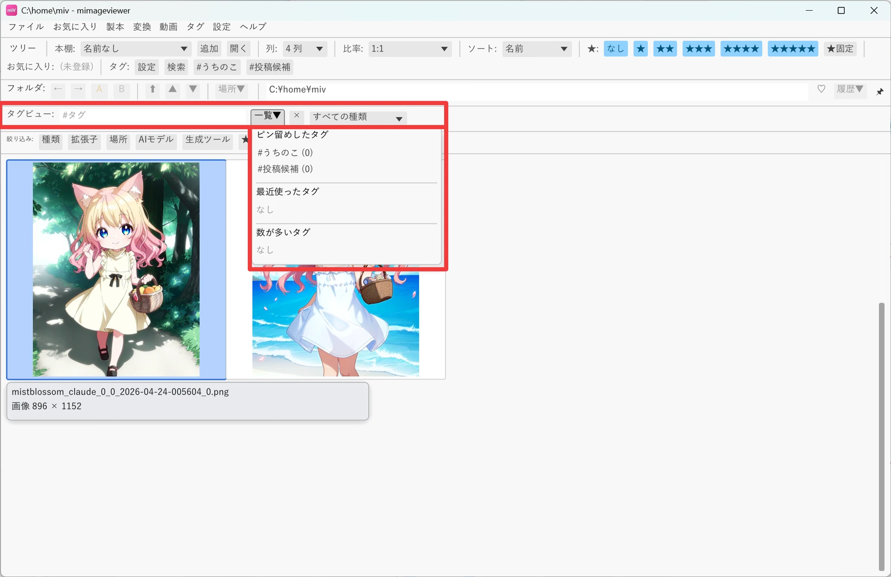

タグを付けて分類する
画像・動画・音声・フォルダ・ZIP/PDF に「#原神」「#風景」のような自由なタグを付けて分類する機能です。 タグはファイル本体を書き換えず mImageViewer 内部に保存されるので、気軽に付け外しできます。 付けたタグはタグビューやスマートフィルタからいつでも呼び出せます。
1. 対象を選んでタグを付ける
グリッドのカーソル位置で対象を決め、複数なら先にチェックして、タグ付けダイアログを開きます。 同じ作品・同じ被写体をまとめてタグ付けできます。
- グリッドで対象の画像・動画・音声・フォルダ・ZIP/PDF へカーソルを合わせます。複数を対象にする場合はチェックします。
- メニュー「タグ」→「タグを付ける/外す…」でダイアログを開きます（T キーでも開けます）。
- 作品名・作者名などのタグ名を入力し、「付ける」を押します。入力欄が空のときは、ピン留めしたタグや過去に使ったタグの候補から選べます。
- 不要になったタグは、表示されている
× #タグ名を押すと外せます。

2. ピン留めタグですばやくトグルする
よく使うタグはメニュー「タグ」→「ピン留めタグの管理…」で登録しておくと、ダイアログを開かずに メニューやツールバーから直接トグル（付与⇔削除）できるようになります。

| 操作 | 効き方 |
|---|---|
| メニュー「タグ」→「タグを付ける/外す…」 / T | カーソル位置（チェック済みがあればチェックした全項目）のタグ付けダイアログを開く |
| メニュー「タグ」→ ピン留めタグ名をクリック | カーソル位置にそのタグをトグル（単独）／チェック済み全体にトグル（複数） |
| ツールバーのタグボタンを右クリック | カーソル位置またはチェック済みの対象にそのタグをトグル |
| ツールバーのタグボタンを左クリック | そのタグのタグビューを開く（探す側の操作） |
| ツールバーのタグボタンを Shift を押しながら右クリック | 今いるフォルダ・ZIP・PDF 自体にそのタグをトグル |
| Ctrl+T | タグビューを開く |

複数をチェックして右クリックトグルすると、レーティングと同じ要領で Space や Shift+矢印で
チェックした項目すべてに一括で反映されます。対象すべてに付いている場合は全削除、それ以外は全付与になります。
誤操作しても Ctrl+Z でまとめて取り消せます。
3. タグビューとスマートフィルタで探す
タグを付けた後は、Ctrl+T のタグビューで見つけます。フルスクリーンのメタデータ パネルやグリッドのタグバッジをクリックしても、そのタグのタグビューを直接開けます。
- タグビューの入力欄に
#猫 #風景のように複数入力すると AND 検索になります。 - 「すべての種類」プルダウンで画像・動画・フォルダ・ZIP/PDF・アーカイブに絞り込めます。
- 今表示中の一覧だけを絞りたいときは、グリッド上部の「絞り込み: タグ」メニュー（スマートフィルタ）を使います。

タグの付与・削除は mImageViewer 内部のカタログを更新するだけです。元の画像・動画ファイル、
ZIP/PDF 本体は書き換えません。 ZIP 内の画像や PDF のページ単位ではタグを付けられず、
本体ファイル（ZIP/PDF そのもの）にタグが付きます。
タグ名のルールやツールバーのカスタマイズ、他ソフトとの互換性など詳しい仕様は
タグ機能リファレンスを参照してください。